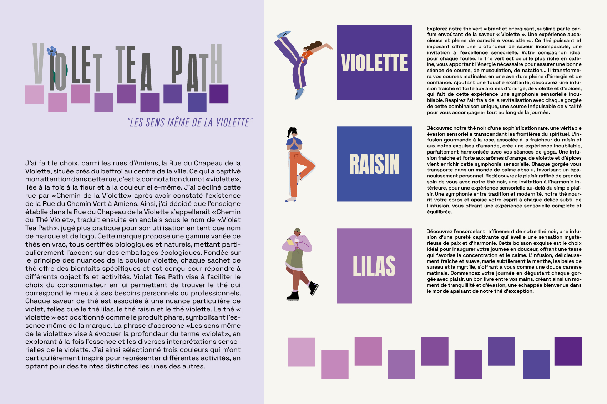
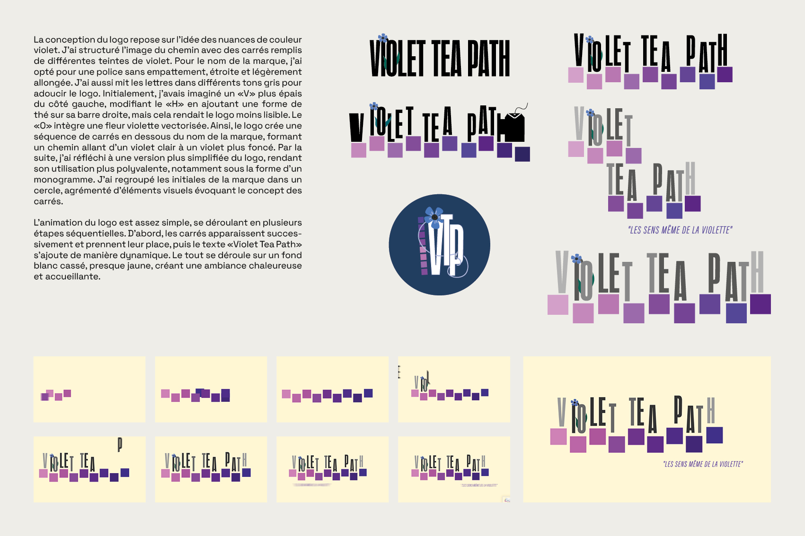
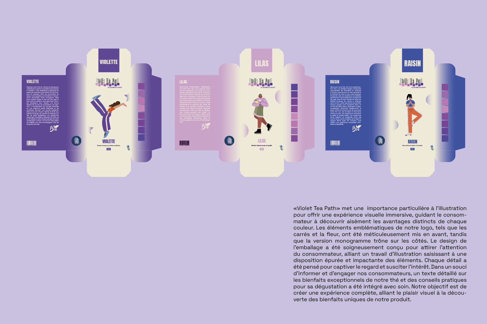
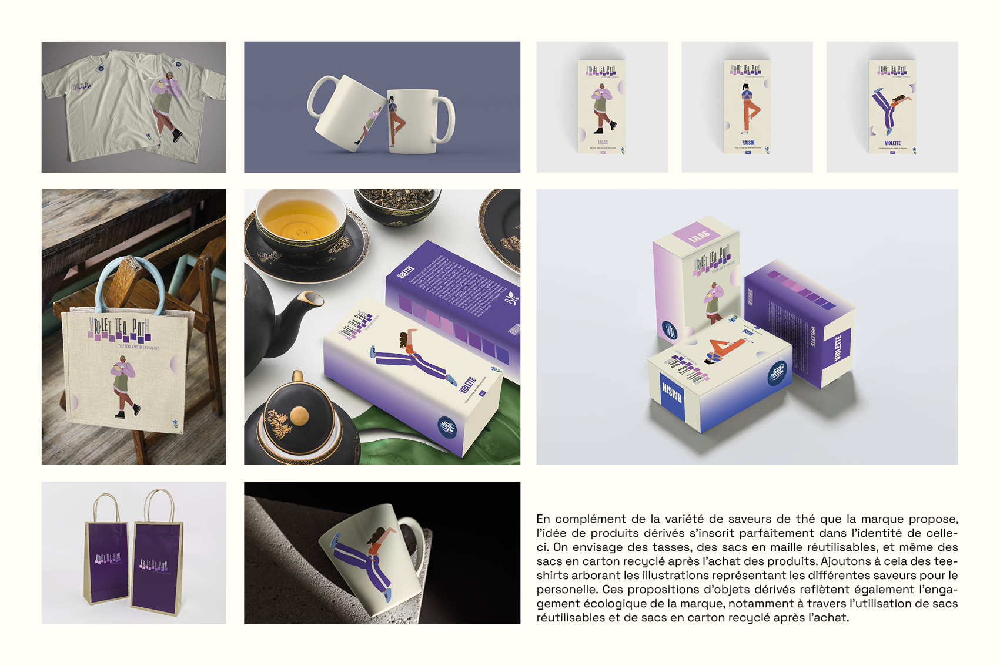

IDENTITÉ VISUELLE
J'ai choisi la Rue du Chapeau de la Violette à Amiens comme source d'inspiration pour créer ma marque "Violet Tea Path". La connotation du mot "violette", associée à la fleur et à la couleur, a captivé mon attention. J'ai décliné la rue en "Chemin de la Violette". En conséquence, j'ai décidé que l'enseigne dans cette rue s'appellerait "Chemin du Thé Violet", traduite ensuite en anglais sous le nom de "Violet Tea Path", jugé plus pratique pour son utilisation en tant que nom de marque et de logo. Ma marque propose une gamme de thés en vrac, tous certifiés biologiques et naturels, mettant l'accent sur des emballages écologiques. Chaque saveur de thé est associée à une nuance de violet spécifique, mettant en avant le thé "violette" comme produit phare.
Le logo, basé sur des nuances de violet, présente une séquence de carrés formant un chemin du violet clair au violet foncé. Une version simplifiée en monogramme a également été créée. L'animation du logo se déroule en plusieurs étapes, avec l'apparition des carrés suivie de l'ajout dynamique du texte "Violet Tea Path". Le design de l'emballage combine une illustration frappante à une disposition épurée. Un texte détaillé sur les bienfaits du thé et des conseils de dégustation est inclus pour informer et engager les consommateurs.
J'envisage des produits dérivés tels que des tasses, des sacs réutilisables en maille et des sacs en carton recyclé. Ces objets reflètent mon engagement écologique, en utilisant des matériaux recyclables. Mon objectif global est de créer une expérience complète, alliant le plaisir visuel à la découverte des bienfaits uniques de mes produits.